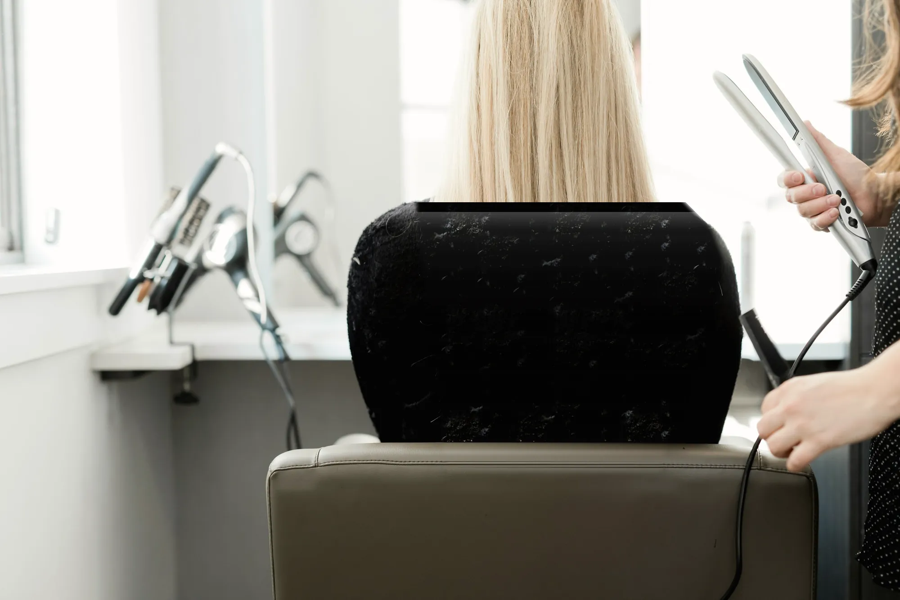
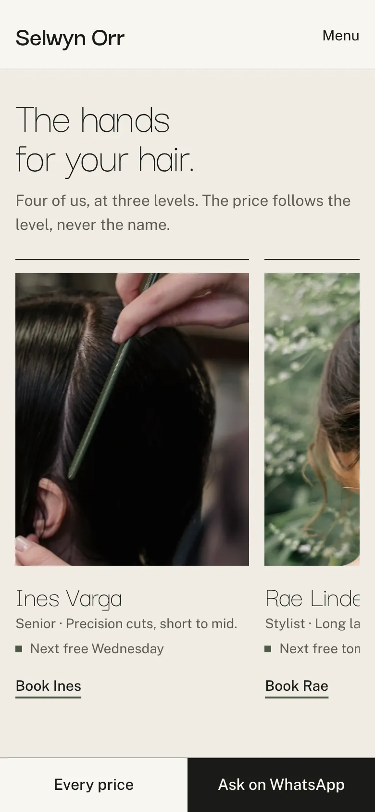
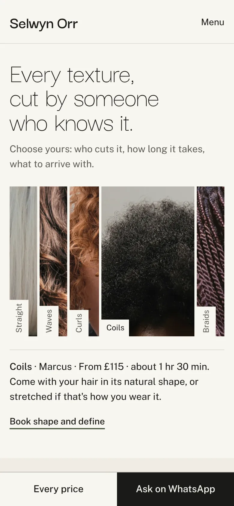
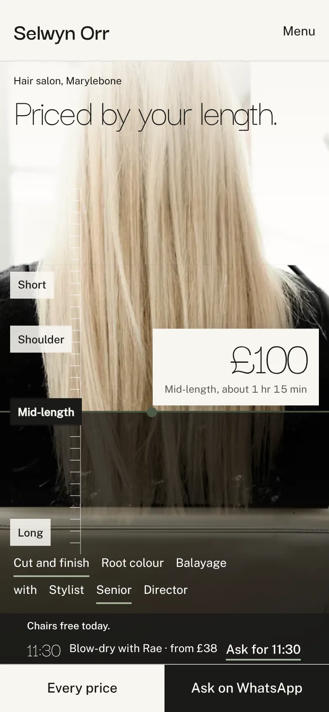
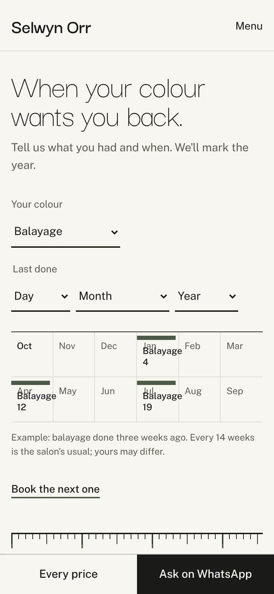
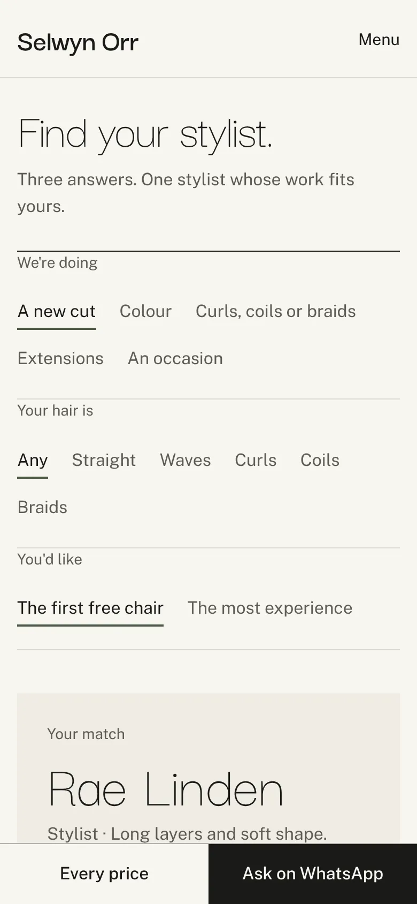
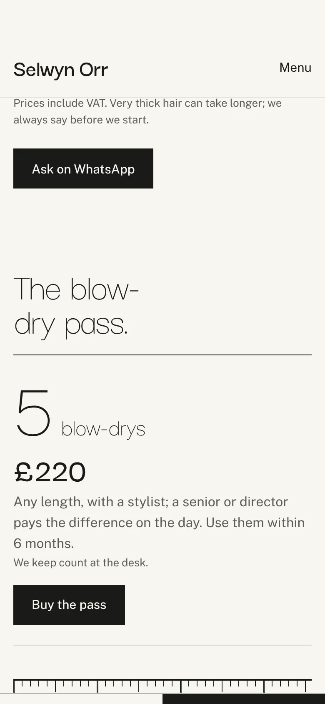

Selwyn Orr, hair salon, Marylebone
The price list is the photograph.
On Selwyn Orr's site, a client taps where her hair falls and sees the price, the time and the stylist level before she books.
Try Selwyn Orr's site
£100Mid-length, about 1 hr 15 min

The stylists, by their work.
One photograph of each stylist's cut or colour, their level, and their next free day, read from the salon's own sheet. No portraits.
Starter
Every texture.
Straight, waves, curls, coils and braids side by side. Each opens to who cuts it, the price, the time, and how to arrive.
Plus
Chairs free today.
The blow-dries, walk-ins and fringe trims the salon frees up during the day, soonest first, each with the stylist and the price from. A slot the salon hasn't confirmed today never shows.
Signature
The colour year.
Her colour and the day it was done mark the visits in the year ahead, from the salon's own weeks, and go to her calendar in one tap.
Plus
Find your stylist.
Three answers lead to the one stylist whose work fits, with their next free day and a message to book them.
Signature
The blow-dry pass.
Five blow-dries for one price, paid on the salon's own Stripe link. The desk keeps count.
PlusAlso on Selwyn Orr's site: the skin test, with the last day for it from her colour date; the look book, each look with its stylist and price; my usual, kept on her own phone; gift vouchers; the wedding hair planner; and a page for each kind of service.
The plans.
Starter
£99 then £25 a month
Home and Plan your visit
- Price by length, on the salon's photograph
- The stylists, by their work
- The skin test
Plus
£199 then £30 a month
Up to five pages
- Every texture
- The colour year
- The look book
- The blow-dry pass and gift vouchers
- My usual
Signature
£349 then £35 a month
Up to twenty pages
- Find your stylist
- Chairs free today
- The wedding hair planner
- Before and after, with each client's written consent
Twelve-month minimum. Any feature can be added to any plan, and extra pages one at a time.
Fast on a phone.
Your prices, on your own photograph.
Send us your Instagram handle. We'll make a free mockup of your home page with your own photograph and your own price list on it.
hello@sitefloor.com